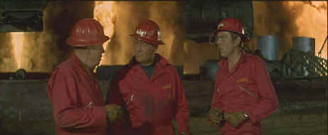

Universal/1968/122m/WS 2.35
Chance Buckman’s the man. You got a fire at your oil field, Chance will blow it out for you as slick and neat as a match after lighting a cigarette. He’ll minimize the danger and damage too. Buckman’s boys are rough and ready. At a moment’s notice it’s jump out of the sack and into the field. Battling fires is their rush and the passion with which they embrace their work often means family turmoil. With a team of veterans and a cocky heir apparent, Buckman rules the roost with an iron fist and a sense of humor.
 |
In the thick of the action©Universal |
When Buckman is injured at a
fire, his friends contact his long estranged daughter. She arrives on the hospital scene
and before you can rub two sticks together, she’s hot for fighting fires and other
things. Before Hellfighters resolves its plot lines, Buckman renews his passion for his
former wife and deals with the realities of being a Dad. None of it’s very deep but
it is consistently entertaining. Director Andrew V. McLaglen makes sure the fires ignite
at a regular interval.
Wayne’s solid presence raises Hellfighters up a
step. Jim Hutton provides Wayne a chance to butt heads with the younger generation and Jay
C. Flippen reminds him about the good old days. Katherine Ross is on hand to bridge the
generations and Vera Miles makes an appealing return as Wayne’s love interest.
The defining color in Hellfighters is red. In the early
fire fighting scenes the bright uniforms of Chance Buckman’s daredevils is deep red.
In the final fire confrontation in South America, the uniforms are more an intense salmon
color. It made me wonder about whether there was some fading of the film elements, but
everything else looked normal. It appears that this DVD was struck from a composite tape
transfer since moiré is evident in a number of scenes and should not occur if the source
and output are both component. Otherwise, the images in this widescreen transfer are
sharp. Contrast is very good and the film element condition is excellent. There’s
plenty of thump in them there oil fires too providing bass rumble. Dialogue is easy to
understand in difficult situations in this Dolby Digital 2-channel mono mix.